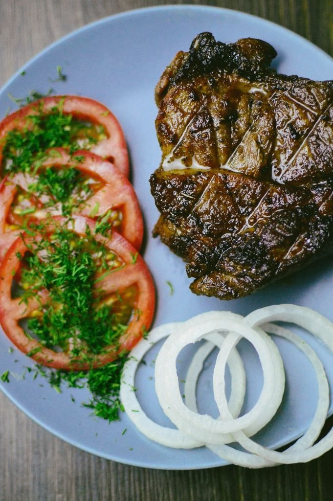
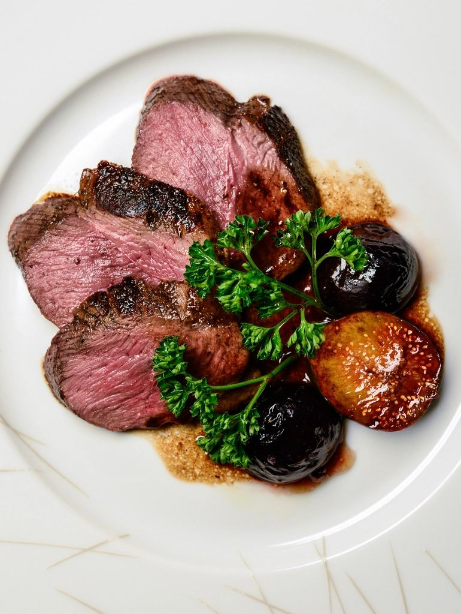
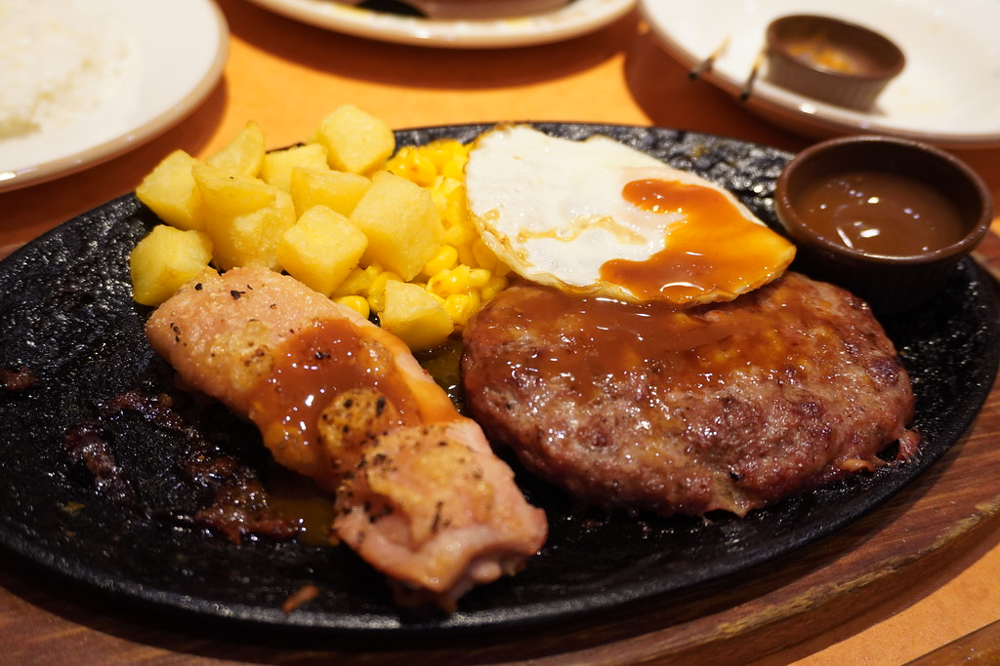
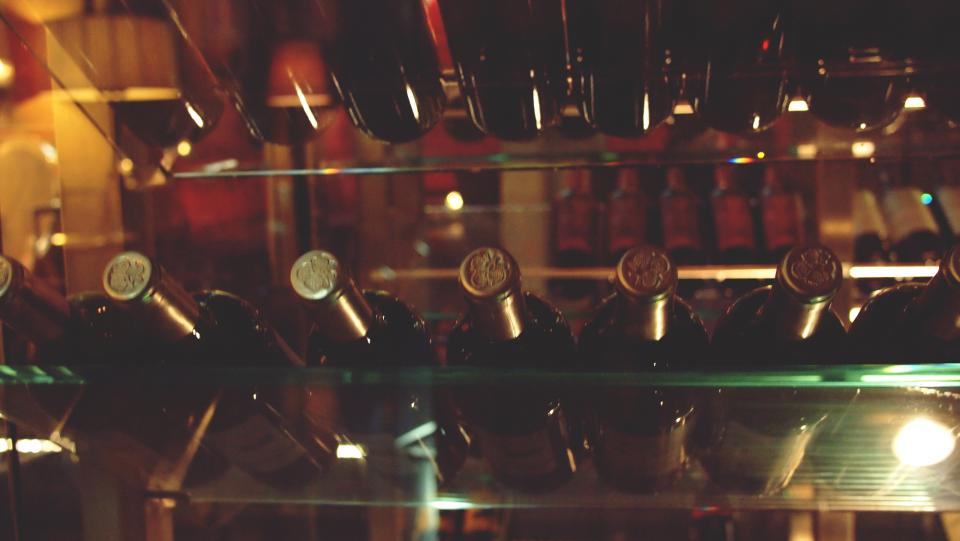

01 AGING
肉は、店で熟成。
仕入れた肉は、店内の熟成庫で寝かせます。旨みがぎゅっと増して、やわらかくなります。(見本の文章です)
02 CHARCOAL
炭火で、焼く。
備長炭の強い火で、一気に焼き上げます。香ばしい焼き目と、しっとりした中心が特長です。
03 WINE
ワインと、ゆっくり。
肉に合う赤ワインを中心に、数種類をご用意。選び方に迷ったら、お声がけください。
写真・店舗名・内容はすべて見本用の架空のものです
Steak House Kurogi
熟成肉のステーキと、グラスワイン。
ご挨拶
カウンター8席とテーブル4卓の、小さなステーキ店です。国産と海外の赤身肉を、店内で熟成させています。
焼きは、備長炭の強火で。表面は香ばしく、中はやわらかく仕上げます。ワインとの相性も、お気軽にご相談ください。
おすすめ

香ばしい焼き目と、肉の旨み。
¥3,200
やわらかく、あっさり上品な味わい。
¥3,800
粗挽き肉のジューシーな一皿。
¥1,600GALLERY

01 AGING
仕入れた肉は、店内の熟成庫で寝かせます。旨みがぎゅっと増して、やわらかくなります。(見本の文章です)
02 CHARCOAL
備長炭の強い火で、一気に焼き上げます。香ばしい焼き目と、しっとりした中心が特長です。
03 WINE
肉に合う赤ワインを中心に、数種類をご用意。選び方に迷ったら、お声がけください。
VOICE
「肉がやわらかく、炭火の香りがたまりません。記念日にぴったりでした。」
40代・男性(イメージ例)「ランチのハンバーグがジューシーで、また来たいです。」
30代・女性(イメージ例)「ワインを選んでもらえて、料理との相性が最高でした。」
50代・男性(イメージ例)ACCESS
お問い合わせ
000-0000-0000